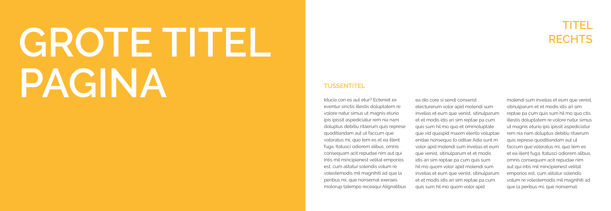
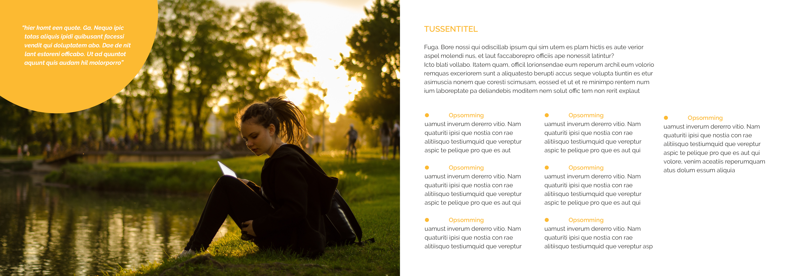
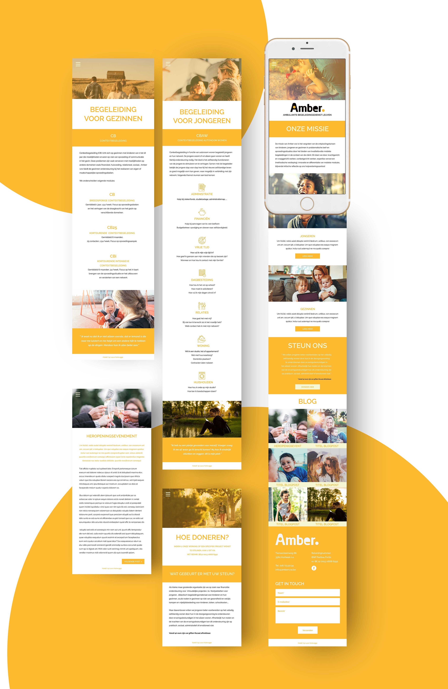
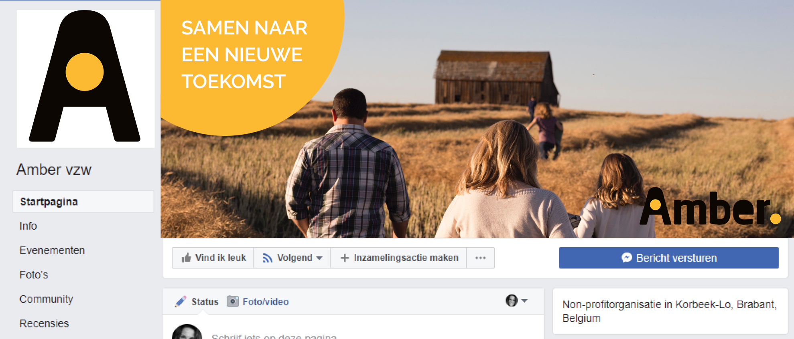
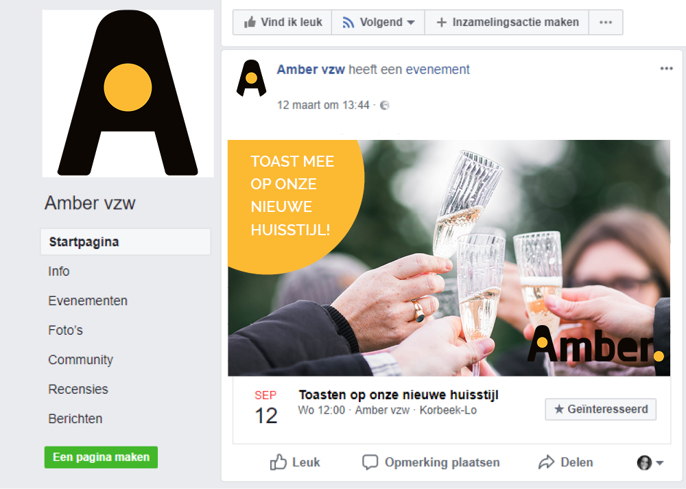

TOEPASSINGEN

BROCHURE

Algemeen
Formaat: A5 liggende
Marges: 12,7mm
3 kolommen met tussenruimte 4mm.
Alle tekst in links uitgelijnd. (met uitzondering van de titel rechts).
Grote titelpagina
Lettertype: Raleway semibold
Tekengrootte: 79pt met regelafstand 79pt.
Kleur: Amberoranje.
Altijd in KAPITALEN.
Titels
Lettertype: Raleway semibold
Tekengrootte: 22pt regelafstand met regelafstand 27pt.
Kleur: Amberoranje.
Altijd in KAPITALEN.
Tussentitels
Lettertype: Raleway semibold
Tekengrootte: 12pt met regelafstand 27pt.
Kleur: Amberoranje.
Altijd in KAPITALEN.
Platte tekst
Lettertype: Raleway regular
Tekengrootte: 9pt met regelafstand 13pt.
Kleur: Amberzwart.
Inleiding
Lettertype: Raleway semibold italic
Tekengrootte: 9pt met regelafstand 13pt.
Kleur: Amberoranje.
Quotes
Lettertype: Raleway bold italic
Tekengrootte: 9pt met regelafstand 13pt.
Kleur: Amberwit.
Amberbol steeds links boven uitgelijnd op de pagina.
Opsomming
Lettertype: Raleway semibold
Tekengrootte: 9pt met regelafstand 13pt.
Kleur voor tekst en opsomming: Amberoranje.
Gebruik van de bol
Altijd in het Amberoranje en in combinatie met witte tekst. Steeds links bovenaan de pagina uitgelijnd.
AFFICHES
LIGGEND

STAAND

Titel
Tekengrootte: 79pt met regelafstand 79pt.
Kleur: Amberoranje.
Altijd in KAPITALEN.
Plaatsing bol
Tekengrootte: 22pt regelafstand met regelafstand 27pt.
Kleur: Amberoranje.
Altijd in KAPITALEN.
Plaatsing logo
Tekengrootte: 12pt met regelafstand 27pt.
Kleur: Amberoranje.
Altijd in KAPITALEN.
STATIONARY

BRIEFHOOFD
De -A van Amber bepaald de marges van de pagina maar ook die tussen de aanspreking en brieftekst. De grootte van de -A wordt bepaald door de grootte van het logo op de pagina. De brieftekst is uitgelijnd op de halve cirkel en het beentje van de -M. De halve cirkel komt tot aan het eerste beentje van de -M en loopt over de letter -A van het logo.
ENVELOPPE
De -A van Amber bepaald opnieuw de marges van de enveloppe. De grootte van de -A wordt bepaald door de grootte van de -A in het logo. De halve cirkel komt tot aan het eerste beentje van de -M en loop over de letter -A van het logo.
NAAMKAARTJE
Uitlijning is idem als de twee voorgaande toepassingen. Ook komt de halve cirkel tot aan het eerste beentje van de -M en loop over de letter -A van het logo. De naam van de persoon wordt in KAPITALEN geschreven. De ruimte tussen het logo en de naam wordt bepaald door twee keer de -A horizontaal te nemen. Het bolletje voor de functie van het persooneelslid is even groot als het bolletje in van het logo.
DIGITALE NIEUWSBRIEF
Algemeen
Start altijd met een banner en het logo in de linker onderhoek. Tekst wordt altijd gecentreerd. Marges 36px met 3 kolommen met een tussenruimte van 12px
Titels
Raleway semibold
tekengrootte 22pt met regelafstand 27pt.
Kleur: Amberoranje
Altijd in KAPITALEN.
Tussentitels
Raleway semibold
tekengrootte 14pt met regelafstand 24pt.
Kleur: Amberoranje
Altijd in KAPITALEN.
Platte tekst
Raleway regular
tekengrootte 14pt met regelafstand 24pt.
Kleur: Amberzwart
Quotes
Raleway semibold
tekengrootte 15pt met regelafstand 25pt.
Kleur: Amberwit
Altijd in KAPITALEN.
De quote of korte samenvatting van de boodschap komt steeds om de afbeelding in de oranje Amberbol.
Buttom
De button/knop is altijd in Amberoranje
Grootte: breedte van de 2de kolom. Hoogte is 36px
Altijd met witte tekst en tekengrootte 12pt.
De tekst staat zowel links/rechts als boven/onder gecentreerd op de button.
Tekst: Raleway semibold
Tekengrootte 14pt met regelafstand 24pt.
Kleur: Amberwit
Altijd in KAPITALEN.
Digitale handtekening
Aanspreking
Beste mevrouw/meneer voornaam en achternaam (zonder komma)
Daarna 2x enter.
Platte tekst
Raleway regular
tekengrootte 11pt met regelafstand 15pt.
Kleur: Amberzwart
Afsluiten met digitale handtekening
Download de template (zie templates) en pas je naam en functie aan. Sla op als png. en stel in als e-mail handtekening.
OPGELET: Onderaan is er telkens een banner die overeenkomt met de banner op facebook. (zonder het logo) Wanneer de banner op facebook wordt vervangen dient deze ook vervangen te worden in de digitale handtekening.
WEBSITE
Aadachtspunten
De Amberbol mag enkel en alleen in het Amberoranje gebruikt worden met daarin steeds witte tekst.
Desktop website

Mobile website
Facebook Banner
Facebook Evenement
Beide posts worden op dezelfde manier vormgegeven. De oranje Amberbol links bovenaan met daarop witte tekst in KAPITALEN. Het enige dat verschilt is het formaat. (zie templates)